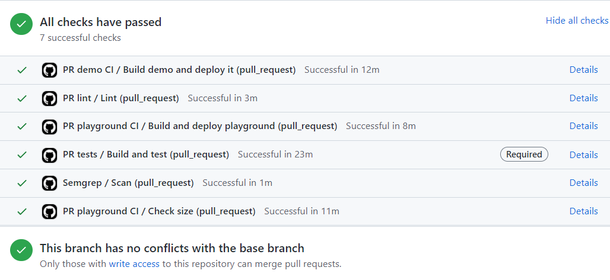

Présentation des droits d'accès aux ressources numérique. Puis ci-dessous un descriptif des étapes de l'integration continue, de la gestion des incidents et du processus de déploiement de la version 1.82 de Data Inventory.
Dans cette section, je vous explique comment est-ce que j'ai pu avoir accès à mon environnement ainsi que les normes que j'ai adopté tout au long de mon stage. Voici un descriptif des accès à mon environnement de développement au sein de Talend.
Okta est une plateforme qui permet une gestion sécurisée des accès aux outils et applications.
Pour pouvoir accèder à Okta, j'ai d'abord été intégré dans le domaine de Talend. Puis, mes identifiants
ont été ajouté dans l'Active Directory de l'OS Windows.
Il met en lien les utilisateurs avec les ressources réseau dont ils ont besoin pour mener à bien leurs missions.
Si je me trouve sur un réseau privé en dehors de l'entreprise, je dois utiliser un VPN avec le logiciel Global Protect pour accèder au portail d'Okta.
Je peux donc accèder à l'ensemble des applications de Talend.
Quand un changement est effectué sur l’application, sa version évolue. On parle de
Semantic versionning
L'objectif du Semantic Versioning est de donner un numéro unique à chaque nouvelle version d'un logiciel.
Une version possède 3 états : MAJOR.MINOR.PATCH.
La Major indique une évolution critique nécessitant aux autres développeurs d'adapter leur code.
La Minor indique l'ajout de fonctionnalités n'ayant pas d'impact pour les autres.
Enfin le Patch indique une simple correction de bogues n'ayant aucun impact.
Afin d’enregistrer tous les changements au sein de l’application, on utilise un changelog.
Le changelog contient une liste des changements dans un ordre chronologique de chaque version du projet. Cela permet d’en informer les contributeurs.
Pour gérer les changements, on utilise l’outil de version changeset.
Changeset Github
Il est conçu pour aider les personnes qui apportent des modifications, jusqu'à la publication d'une nouvelle version.
Le processus d'intégration est inclus dans la continuité d'un projet. Un certain nombre d'opérations de créations et de tests sont effectuées automatiquement lorsque du nouveau code est implémenté. Cela vise à garantir un code de qualité avant la mise en production et d'avoir un retour rapide des potentielles erreurs de développement.
Un repository GitHub est à la disposition de tous les développeurs. Il renseigne sur les procédures et les conventions de nommage de création de branche, de commit et de pull requests.
Pour chacune de mes missions, j’ai effectué une pull request. Cela m'a permis d'échanger avec les autres développeurs
quant aux changements sur ma branche git. La pull request contient un fichier de suivi dans lequel je documente
tous les changements effectués.
Voir ma pull request.
Lorsque je publie mes changements (push), le processus d'intégration continu s'exécute automatiquement et donne un retour sur les différents tests. Si des procédures échouent, il faut les corriger.

Le principe de la pull request est de demandé aux autres développeurs de passer en revue code implémenté.
Les réviseurs ont la possibilité de laisser des commentaires de proposer une correction de la fonctionnalité
et d'approuver les changements pour validation.
Quand deux développeurs ont approuvé mes changements, je peut procéder au Squash and Merge de ma pull request.
Cela permet de rassembler tous les commits de ma branche en un seul.
Chaque semaine, les managers de chaque équipe (QA, Front, Back, Product Owner) s’entretiennent
concernant la gestion des incidents. Il y a deux niveaux d’intervention concernant le support à Talend.
Support Talend
Premièrement, l’équipe de support gère les incidents de premier niveau qui sont rapportés par les clients.
Puis l’équipe de la R&D intervient lorsque le support n’a pas pu répondre à l’incident déclaré.

Côté R&D, l’analyse et le traitement des tickets d’incidents est reporter sur Jira Board.
Les tickets peuvent provenir de clients ou bien de l’équipe interne de Talend.
L’équipe établit un premier niveau de priorité sur les nouveaux tickets. Puis elle notifie le support et le
partage à Sales force, l'outil de la gestion relation client.
Le rôle du Product Owner est d’analyser le ticket et d’envoyer un message au support afin de demander plus de précision
sur l’incident, exemple : quel est le scénario exact à reproduire.
Il priorise également les tickets à traiter car la notion de perte d’argent est importante à prendre en compte dans la priorisation.
Une fois que l’équipe de la R&D dispose de plus d’information, elle fixe un délai de réponse en fonction de l’état actuel du ticket.

Une release est un livrable pour lequel une nouvelle version de l'application est proposée et tester ensuite.
Lien des releases sur GitHub
En général, elle est effectuée lorsque beaucoup de changements ont été implémentés au sein du projet et quand le
besoin s'en fait ressentir.
Il y a plusieurs environnements pour tester la livraison de la version du produit.
Une première validation de la release sur un environnement est effectué.
Une fois la release validée, elle est prête à être livrée en production.
Le déploiement de la release jusqu’à la production s’effectue sur deux environnements différents.
Si un problème survient lors de la validation, alors le ticket concerné repasse en étape de progression dans Jira Board.
Avant la mise en production, un ticket de déploiement est créé dans Jira. Il comprend les versions front et back choisis pour être envoyé en production.
Pour la synchronisation entre équipes, un Chanel Slack est créé pour le besoin du déploiement.
Toutes les équipes (Front, Back, QA...) interviennent après validation, on passe à l’environnement de production supérieur.


Jira
GitHub
Okta
Slack